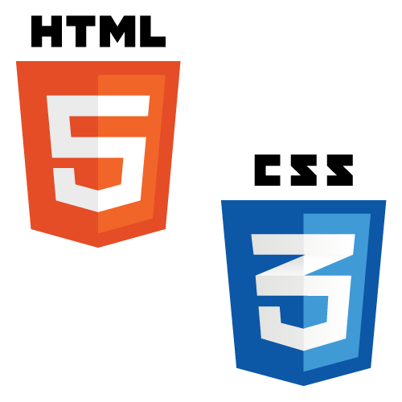

Web Engineer / Athlete / Musician
SKILL

HTML5/CSS3
レスポンシブやSassを含め、基本的なコーディングは問題ありません。一般的にはWordPressを活用していくと思いますがプログラミング学習を始めた際に取得（教則本使用）。 使用エディタは「Atom」や「Sublime Text」など一通りを実際に使用した結果、現在は「VisualStudioCode」を使用しております。
JavaScript
複雑なコードを一から書くことはまだできませんが、学習教材を使用して基礎文法を学習（教則本使用）。jQueryも同時に学習したためコードの導入などは可能です。
PHP/Laravel
WordPressを使用する上でカスタマイズすることが必要になると考え、学習教材を使用し基礎文法を取得（Udemy使用）。同時に「Laravel」「Docker」などのフレームワークも学習し、WordPressで作成したプログラムへのカスタマイズの記述が可能。

WordPress
現職にてWordPressについてのお問い合わせ対応があるため、本業務のレンタルサーバー運用の一環として学習（Udemy使用）。ダッシュボード内の操作方法、パスワードなどWordPressの運用に必要な情報について学習。

MySQL
現職にてWordPress運用時などにデータベース管理が存在するため、内容についての理解が必要であると考え、基本コマンドを独学にて取得。本業務では「phpMyAdmin」を使用しデータベースの移行を行うため、移行方法も取得。
infrastructure
現職のカスタマーサポート業務にて、サーバーでのドメイン運用のためのDNSレコード設定方法、メールソフト設定方法などを実務にて取得。IT基礎知識のみでなく、お客様対応をしたことで社会人としてのマナーをより身に付けることができました。